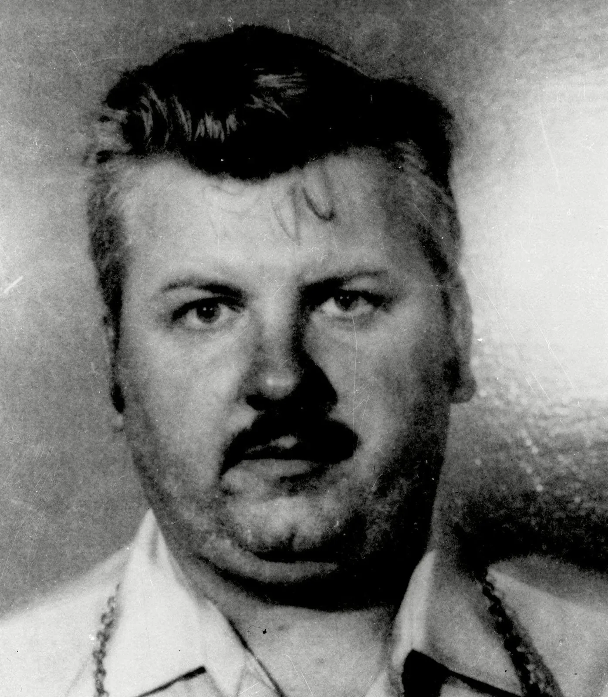
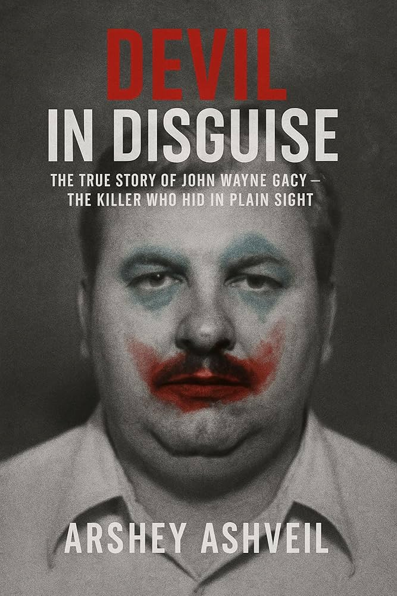

Crimes & Arrest
- Lured young men with false promises and opportunities.
- Most victims were strangled and hidden in his home's crawl space.
- Arrested in 1978; convicted of 33 murders; executed in 1994.
John Wayne Gacy performed publicly as "Pogo the Clown" while secretly committing gruesome murders. Below is a clean, dark presentation — images and a short video slot are included. Replace the sample asset paths in assets/ with
your own files.
| Name | Alias | Residence | Age | Victims |
|---|---|---|---|---|
| John Wayne Gacy | Killer Clown | Chicago, USA | 52 | 33 |
| Ted Bundy | — | USA | 42 | 30+ |
| Jeffrey Dahmer | Milwaukee Cannibal | Milwaukee, USA | 34 | 17 |
| Richard Ramirez | The Night Stalker | California, USA | 30 | 14+ |
| David Berkowitz | Son of Sam | New York, USA | 24 | 6 |
| Andrei Chikatilo | Butcher of Rostov | Russia | 53 | 52 |
| Ed Gein | Butcher of Plainfield | Wisconsin, USA | 77 | 2+ |
| Pedro Alonso Lopez | Monster of the Andes | Colombia | 48 | 110+ |
| Albert Fish | The Gray Man | New York, USA | 65 | 3+ |
| Jack Unterweger | Journalist Killer | Austria | 43 | 11+ |


Tip: Put your media files in assets/ (same folder as this HTML) and keep filenames exact.